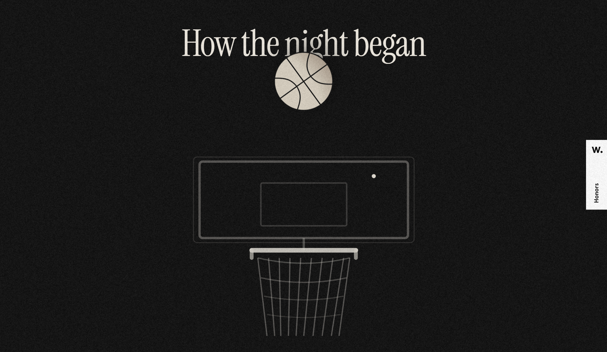
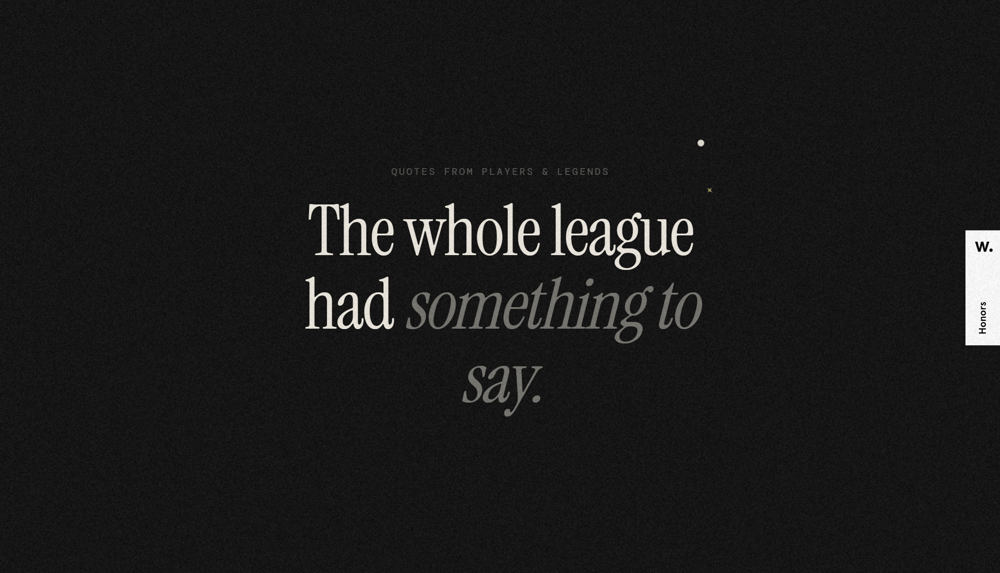
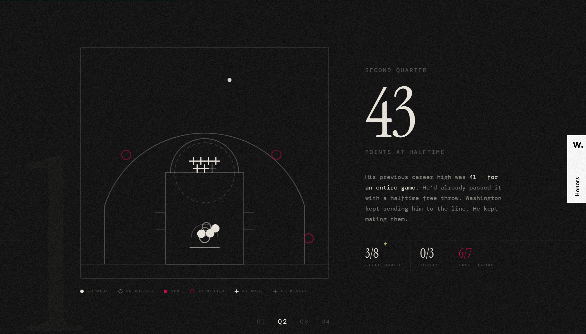
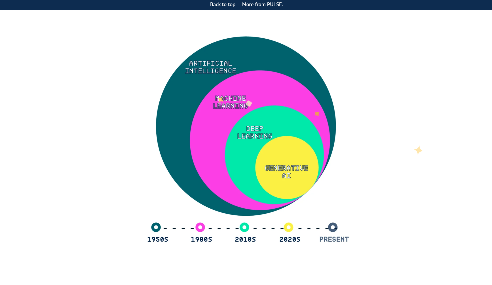
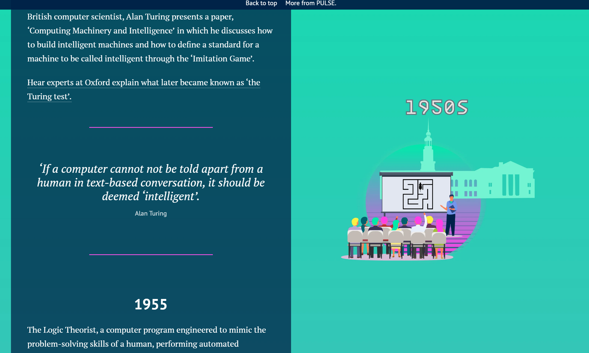

"Bam. 83." created by 72 Huddle
This website was extremely visually appealing to me and was a creative and fun way to visualize shot chart data from the basketball player Bam Adebayo. I enjoyed the graphics as well as the simple color scheme. For my capstone, I want the design to be relatively simple yet effective, just like this site.



"A history of AI" from University of Oxford
I chose to use this website as an example because of it's content and form. It speaks about the history of AI and how it has come to be what it is now, and for my capstone I want to touch a little about how AI is making it's way into many aspects of design. I also like how this site uses a vertical timeline and how the graphics change as you scroll to visualize different periods of time.